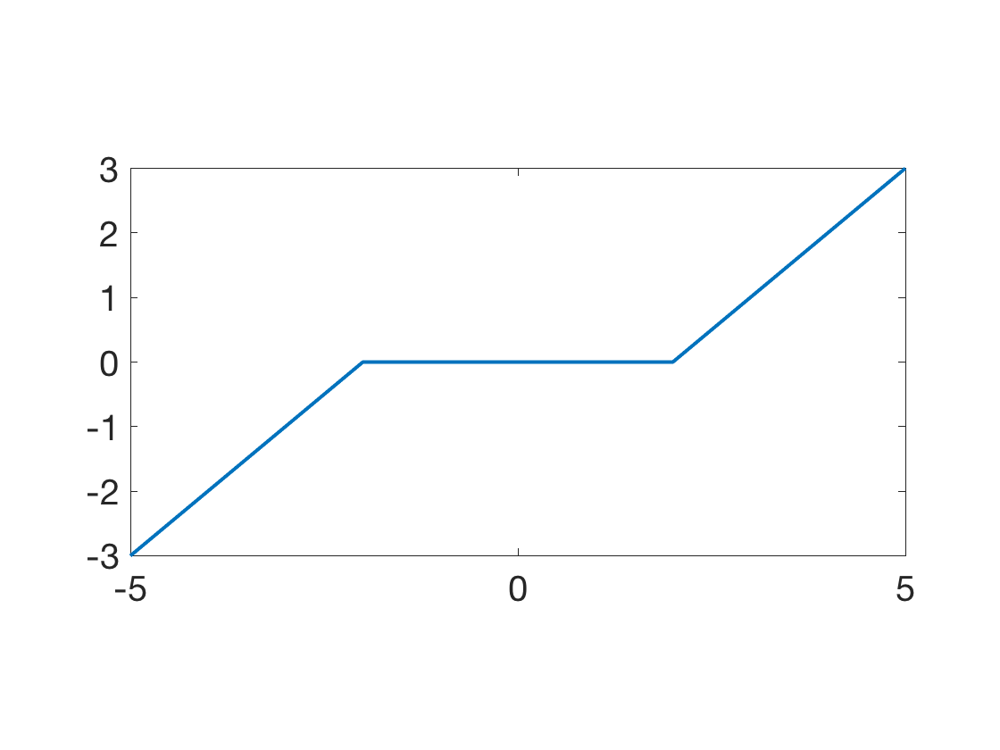
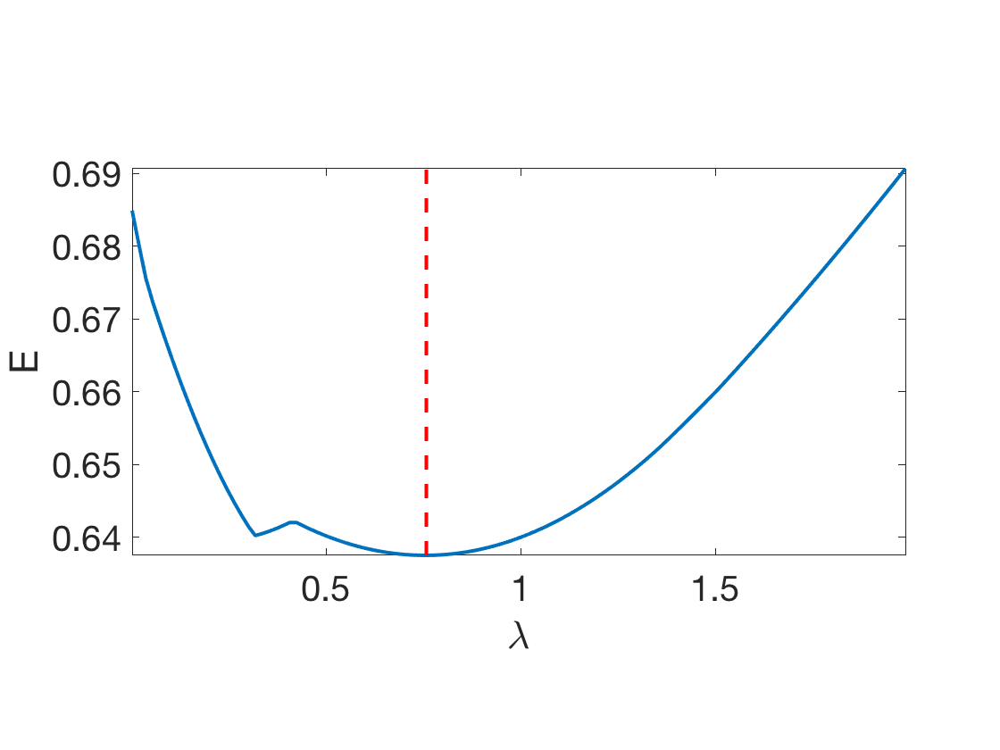
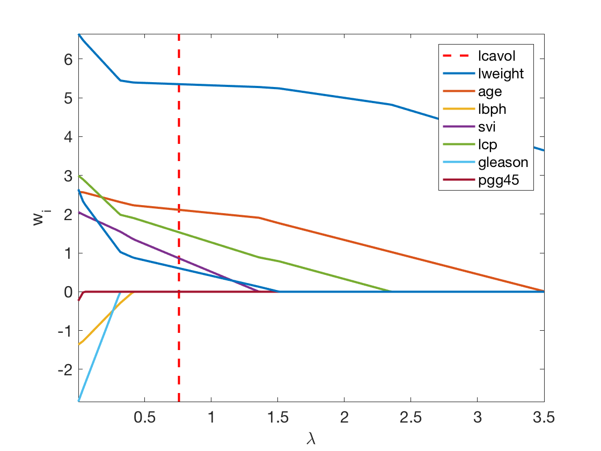
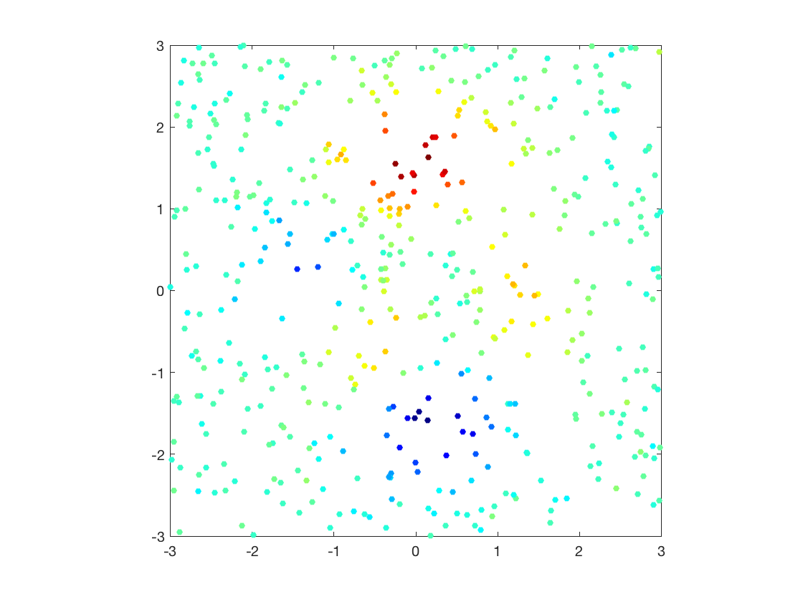
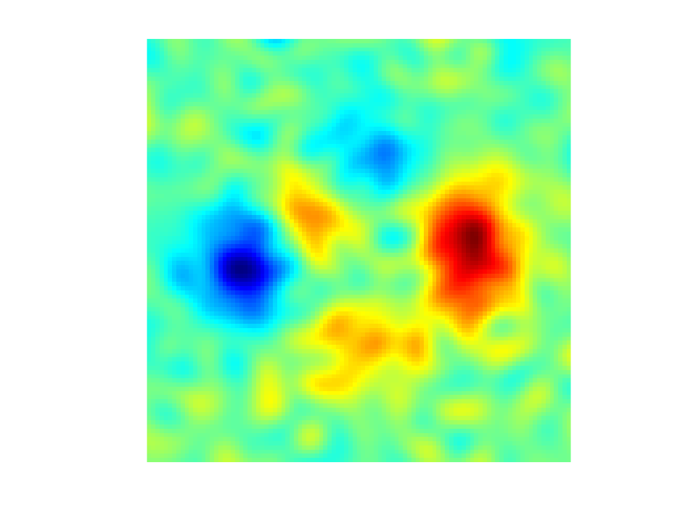
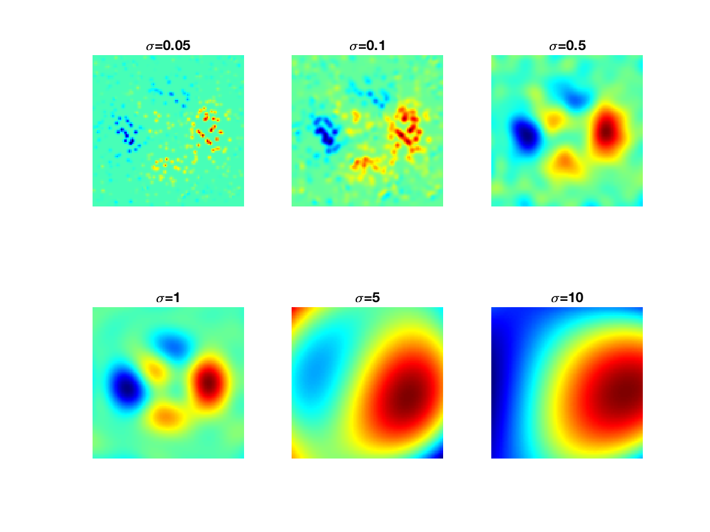

Linear Regression and Kernel Methods
This tour studies linear regression method in conjunction with regularization. It contrasts ridge regression and the Lasso. It also presents its non-linear variant using kernlization.
Contents
We recommend that after doing this Numerical Tours, you apply it to your own data, for instance using a dataset from LibSVM.
Disclaimer: these machine learning tours are intended to be overly-simplistic implementations and applications of baseline machine learning methods. For more advanced uses and implementations, we recommend to use a state-of-the-art library, the most well known being Scikit-Learn
Installing toolboxes and setting up the path.
You need to download the following files: general toolbox.
You need to unzip these toolboxes in your working directory, so that you have toolbox_general in your directory.
For Scilab user: you must replace the Matlab comment '%' by its Scilab counterpart '//'.
Recommandation: You should create a text file named for instance numericaltour.sce (in Scilab) or numericaltour.m (in Matlab) to write all the Scilab/Matlab command you want to execute. Then, simply run exec('numericaltour.sce'); (in Scilab) or numericaltour; (in Matlab) to run the commands.
Execute this line only if you are using Matlab.
getd = @(p)path(p,path); % scilab users must *not* execute this
Then you can add the toolboxes to the path.
getd('toolbox_general/');
Dataset Loading
We test the method on the prostate dataset in \(n=97\) samples with features \(x_i \in \RR^p\) in dimension \(p=8\). The goal is to predict the price value \(y_i \in \RR\).
Helpers.
SetAR = @(ar)set(gca, 'PlotBoxAspectRatio', [1 ar 1], 'FontSize', 20); Xm = @(X)X-repmat(mean(X,1), [size(X,1) 1]); Cov = @(X)Xm(X)'*Xm(X);
Load the dataset.
name = 'prostate'; load(['ml-' name]);
Randomly permute it.
A = A(randperm(size(A,1)),:);
Separate the features \(X\) from the data \(y\) to predict information.
X = A(:,1:end-2); y = A(:,end-1); c = A(:,end);
\(n\) is the number of samples, \(p\) is the dimensionality of the features,
[n,p] = size(X);
Normalize the features.
X = Xm(X); X = X ./ repmat( sqrt(sum(X.^2,1)), [n 1] );
Dimenionality Reduction and PCA
In order to display in 2-D or 3-D the data, dimensionality is needed. The simplest method is the principal component analysis, which perform an orthogonal linear projection on the principal axsis (eigenvector) of the covariance matrix.
Display the covariance matrix.
clf; imagesc(Cov(X));

Compute PCA ortho-basis and the feature in the PCA basis.
[U,D,V] = svd(Xm(X),'econ');
Z = Xm(X) * V;
Plot sqrt of the eigenvalues.
clf; plot(diag(D), '.-', 'LineWidth', 2, 'MarkerSize', 30); axis tight; SetAR(1/2);

Display the features.
k = 0; clf; for i=1:p for j=1:p k = k+1; subplot(p,p,k); if i==j hist(X(:,i),6); axis tight; else plot(X(:,j),X(:,i), '.'); axis tight; end set(gca, 'XTick', [], 'YTick', [] ); axis tight; if i==1 title(class_names{j}); end end end

Display the points cloud of feature vectors in 3-D PCA space.
options.disp_dim = 3; clf; plot_multiclasses(X,ones(n,1),options); SetAR(1);

1D plot of the function to regress along the main eigenvector axes.
col = {'b' 'g' 'r' 'c' 'm' 'y' 'k'};
clf;
for i=1:min(p,3)
subplot(3,1,i);
plot(Z(:,i), y, '.', 'Color', col{i}, 'MarkerSize', 20);
axis tight;
end

Linear Regression
We look for a linear relationship \( y_i = \dotp{w}{x_i} \) written in matrix format \( y= X w \) where the rows of \(X \in \RR^{n \times p}\) stores the features \(x_i \in \RR^p\).
Since here \( n > p \), this is an over-determined system, which can solved in the least square sense \[ \umin{ w } \norm{Xw-y}^2 \] whose solution is given using the Moore-Penrose pseudo-inverse \[ w = (X^\top X)^{-1} X^\top y \]
Split into training and testing.
I0 = find(c==1); % train I1 = find(c==0); % test n0 = length(I0); n1 = n-n0; X0 = X(I0,:); y0 = y(I0); X1 = X(I1,:); y1 = y(I1);
Remove the mean to avoid introducing a bias term.
m0 = mean(y0); y0 = y0-m0; y1 = y1-m0;
Least square solution.
w = (X0'*X0) \ (X0'*y0);
Prediction (along 1st eigenvector).
clf; plot( [y1 X1*w], '.-', 'MarkerSize', 20); axis tight; legend('y', 'X_1 w');

Mean-square error on testing set.
E = sqrt( sum( (X1*w-y1).^2 ) / n1 );
fprintf('Relative prediction error: %.3f\n', E/mean(y1.^2));
Relative prediction error: 0.685
Regularization is obtained by introducing a penalty. It is often called ridge regression, and is defined as \[ \umin{ w } \norm{Xw-y}^2 + \lambda \norm{w}^2 \] where \(\lambda>0\) is the regularization parameter.
The solution is given using the following equivalent formula \[ w = (X^\top X + \lambda \text{Id}_p )^{-1} X^\top y, \] \[ w = X^\top ( XX^\top + \lambda \text{Id}_n)^{-1} y, \] When \(p<n\) (which is the case here), the first formula should be prefered.
In contrast, when the dimensionality \(p\) of the feature is very large and there is little data, the second is faster. Furthermore, this second expression is generalizable to Kernel Hilbert space setting, corresponding possibly to \(p=+\infty\) for some kernels.
lambda = .1;
w = (X0'*X0+lambda*eye(p)) \ (X0'*y0);
w1 = X0'*( (X0*X0'+lambda*eye(n0)) \ y0 );
fprintf('Error (should be 0): %.4f\n', norm(w-w1)/norm(w));
Error (should be 0): 0.0000
Exercice 1: (check the solution) Display the evolution of the error \(E\) as a function of \(\lambda\).
exo1;

Exercice 2: (check the solution) Display the regularization path, i.e. the evolution of \(w\) as a function of \(\lambda\).
exo2;

Sparse Regularization
In order to perform feature selection (i.e. select a subsect of the features which are the most predictive), one needs to replace the \(\ell^2\) regularization penalty by a sparsity inducing regularizer. The most well known if the \(\ell^1\) norm \(\norm{w}_1 \eqdef \sum_i w_i\).
The energy to minimize is \[ \umin{w} J(w) \eqdef \frac{1}{2}\norm{X w-y}^2 + \lambda \norm{w}_1. \]
J = @(w,lambda)1/2*norm(X0*w-y0)^2 + lambda*norm(w,1);
The simplest iterative algorithm to perform the minimization is the so-called iterative soft thresholding (ISTA), aka proximal gradient aka forward-backward.
It performs first a gradient step (forward) of the smooth part \(\frac{1}{2}\norm{X w-y}^2\) of the functional and then a proximal step (backward) step which account for the \(\ell^1\) penalty and induce sparsity. This proximal step is the soft-thresholding operator \[ \Ss_s(x) \eqdef \max( x-\lambda,0 ) \sign(x). \]
Soft = @(x,s)max(abs(x)-s,0).*sign(x);
The ISTA algorithm reads \[ w_{k+1} \eqdef \Ss_{\la\tau}( w_k - \tau X^* ( X w_k - y ) ), \] where, to ensure convergence, the step size should verify \( 0 < \tau < 2/\norm{X}^2 \) where \(\norm{X}\) is the operator norm.
Display the soft thresholding operator.
t = linspace(-5,5,201); clf; plot(t,Soft(t,2), 'LineWidth', 2); axis tight; SetAR(1/2);
Descent step size.
tau = 1.5/norm(X0)^2;
Choose a regularization parameter \(\la\).
lambda = .2;
Initialization \(w_0\).
w = zeros(p,1);
A single ISTA step.
w = Soft( w-tau*X0'*(X0*w-y0), lambda*tau );
Exercice 3: (check the solution) Implement the ISTA algorithm, display the convergence of the energy.
exo3;

Exercice 4: (check the solution) Display the full regularization path. You can start by large \(\lambda\) and use a warm restart procedure to reduce the computation time. Compute the classification error.
exo4;
Exercice 5: (check the solution) Display the regularization path, i.e. the evolution of \(w\) as a function of \(\lambda\).
exo5;
Kernelized Ridge Regression
In order to perform non-linear and non-parametric regression, it is possible to use kernelization. It is non-parametric in the sense that the number of parameter grows with the number \(n\) of samples (while for the initial linear method, the number of parameter is \(p\)). This allows in particular to generate estimator of arbitrary complexity.
Given a kernel \( \kappa(x,z) \in \RR \) defined for \((x,z) \in \RR^p \times \RR^p\), the kernelized method replace the linear approximation functional \(f(x) = \dotp{x}{w}\) by a sum of kernel centered on the samples \[ f_h(x) = \sum_{i=1}^n h_i k(x_i,x) \] where \(h \in \RR^n\) is the unknown vector of weight to find.
When using the linear kernel \(\kappa(x,y)=\dotp{x}{y}\), one retrieves the previously studied linear method.
Generate synthetic data in 2D. Add noise to a deterministic map.
B = 3;
n = 500; p = 2;
X = 2*B*rand(n,2)-B;
rho = .5; % noise level
y = peaks(X(:,1), X(:,2)) + randn(n,1)*rho;
Display as scattered plot.
clf; scatter(X(:,1), X(:,2), ones(n,1)*20, y, 'filled'); colormap jet(256); axis equal; axis([-B B -B B]); box on;
Macro to compute pairwise squared Euclidean distance matrix.
distmat = @(X,Z)bsxfun(@plus,dot(X',X',1)',dot(Z',Z',1))-2*(X*Z');
The gaussian kernel is the most well known and used kernel \[ \kappa(x,y) \eqdef e^{-\frac{\norm{x-y}^2}{2\sigma^2}} . \] The bandwidth parameter \(\si>0\) is crucial and controls the locality of the model. It is typically tuned through cross validation.
sigma = .3; kappa = @(X,Z)exp( -distmat(X,Z)/(2*sigma^2) );
Once avaluated on grid points, the kernel define a matrix \[ K = (\kappa(x_i,x_j))_{i,j=1}^n \in \RR^{n \times n}. \]
K = kappa(X,X);
The weights \(h \in \RR^n \) are solutions of \[ \umin{h} \norm{Kh-y}^2 + \la \dotp{Kh}{h} \] and hence can be computed by solving a linear system \[ h = (K+\la \text{Id}_n)^{-1} y \]
lambda = 0.01; h = (K+lambda*eye(n))\y;
Regressor.
Y = @(x)kappa(x,X)*h;
Evaluation on a 2D grid.
q = 101; t = linspace(-B,B,q); [v,u] = meshgrid(t,t); Xn = [u(:), v(:)];
Display as an image.
yn = reshape(Y(Xn),[q,q]); clf; imagesc(t,t,yn); axis image; axis off; colormap jet(256);
Exercice 6: (check the solution) Display the evolution of the regression as a function of \(\sigma\).
exo6;
Exercice 7: (check the solution) Apply the kernelize regression to a real life dataset. Study the influence of \(\la\) and \(\si\).
exo7;